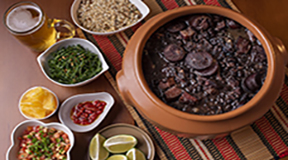

Feijoada
Contexto Histórico
No mundo da gastronomia existem várias hipóteses sobre o surgimento da feijoada. Uma das mais famosas diz que a feijoada que conhecemos teve sua origem no século XIX e já se tornou símbolo nacional na mesma época. Uma outra hipótese diz que o prato foi criado nas senzalas, pelos escravos, usando restos de comida dos nobres portugueses. O que podemos dizer com certeza é que a feijoada é uma variação de um prato bem antigo típico europeu, que tem como base a mistura de tipos diferentes de carne, com legumes e verduras, e varia de região em região. O “Cassoulet” na França, o tradicional cozido em Portugal, o “Casoeula” na Itália e o “Puchero” na Espanha são alguns exemplos dessa mistura.
Os portugueses foram os responsáveis por trazer ao Brasil a técnica e a combinação do cozido com carnes, que com o passar do tempo e evolução dos costumes, teve o nosso feijão acrescentado.
Falando especificamente desse último ingrediente, o feijão preto é de origem sul-americana e era parte da dieta dos índios nativos. Antes da chegada dos portugueses ao Brasil, já se conhecia na Europa diversas variedades de feijão, e era comum usá-lo no preparo de alguns pratos, como “Cassoulet” com o feijão branco.

Ingredientes:
1 orelha de porco cortada em pedaços pequenos
2 pés de porco cortados em pedaços pequenos
1/2 kg de carne-seca cortada em pedaços pequenos
1/2 kg de costela de porco cortada em pedaços pequenos
1/2 kg de feijão preto
2 colheres de sopa de óleo
1 cebola picada
300 gramas de linguiça calabresa de porco cortados em fatias grossas
300 gramas de linguiça de paio cortada em fatias grossas
400 grama de lombo de porco sem osso cortado em cubos
1 laranja média sem casca
2 Cubos de Caldo de Bacon Ariscoarisco Logo
2 litros de água fervente
MODO DE PREPARO:
Na véspera, em uma tigela, coloque a orelha e os pés de porco e cubra-os com água fria.
Troque a água 4 vezes durante esse tempo.
Em outra tigela, coloque a carne-seca e a costelinha de porco e cubra-as com água fria para dessalgar. Troque a água 4 vezes.
No dia seguinte, coloque o feijão em uma tigela, cubra com água e reserve por 1 hora.
Escorra a orelha, o pé de porco, a carne seca e a costelinha e coloque-os em uma panela de pressão cobertos com água fria. Tampe a panela e cozinhe por 15 minutos, contados a partir do início da pressão. Retire do fogo, aguarde sair todo o vapor e abra a panela. Escorra e reserve.
Na mesma panela, aqueça o óleo e doure a cebola. Junte a linguiça, o paio, o lombo e refogue por mais 3 minutos. Junte o feijão escorrido, as carnes pré-cozidas reservadas e a laranja.
Acrescente os cubos de caldo de bacon Arisco e água fervente. Tampe e cozinhe por 15 minutos, contados a partir do início da pressão.
Retire do fogo, aguarde sair todo o vapor e abra a panela. Retire a laranja e leve novamente ao fogo. Cozinhe em fogo baixo, com a panela parcialmente tampada (sem a pressão), por mais 30 minutos ou até engrossar o caldo e os ingredientes estarem cozidos.
Passe para uma travessa e sirva em seguida.